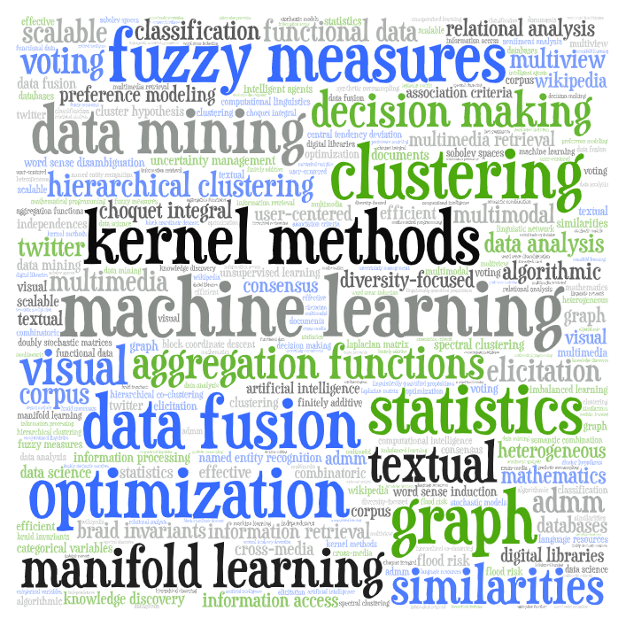

Welcome! I'm an associate professor (maître de conférences) with HDR in applied mathematics at UCA/Clermont Auvergne INP/SIGMA Clermont, a permanent member of the LIMOS (Laboratoire d'Informatique, de Modélisation et d'Optimisation des Systèmes) and an associated member of the CERDI (Centre d'Etudes et de Recherches sur le Développement International - UMR 6587).
Short bio
 From 2010 to 2023, I was an associate professor at the university of Lyon 2 and a member of the ERIC Lab (Équipe de Recherche en Ingénierie des Connaissances - UR 3083). From 2007 to 2010, I was a research scientist at Xerox Research Centre Europe (now Naver labs) in Grenoble. I received my Phd in mathematics from the university of Paris 6 in 2007. I was a research assistant (thésard CIFRE) at Thalès from 2004 to 2007. I have a master degree (DEA) in statistics from the university of Paris 6 and I also graduated from the Magistère d'Economiste-Statisticien of the universities of Toulouse 1 and 3. For more information, please see my detailed resume.
Contact
SIGMA Clermont
27 rue Roche Genès
63170 Aubière, France
julien.ah-pine((at))sigma-clermont.fr